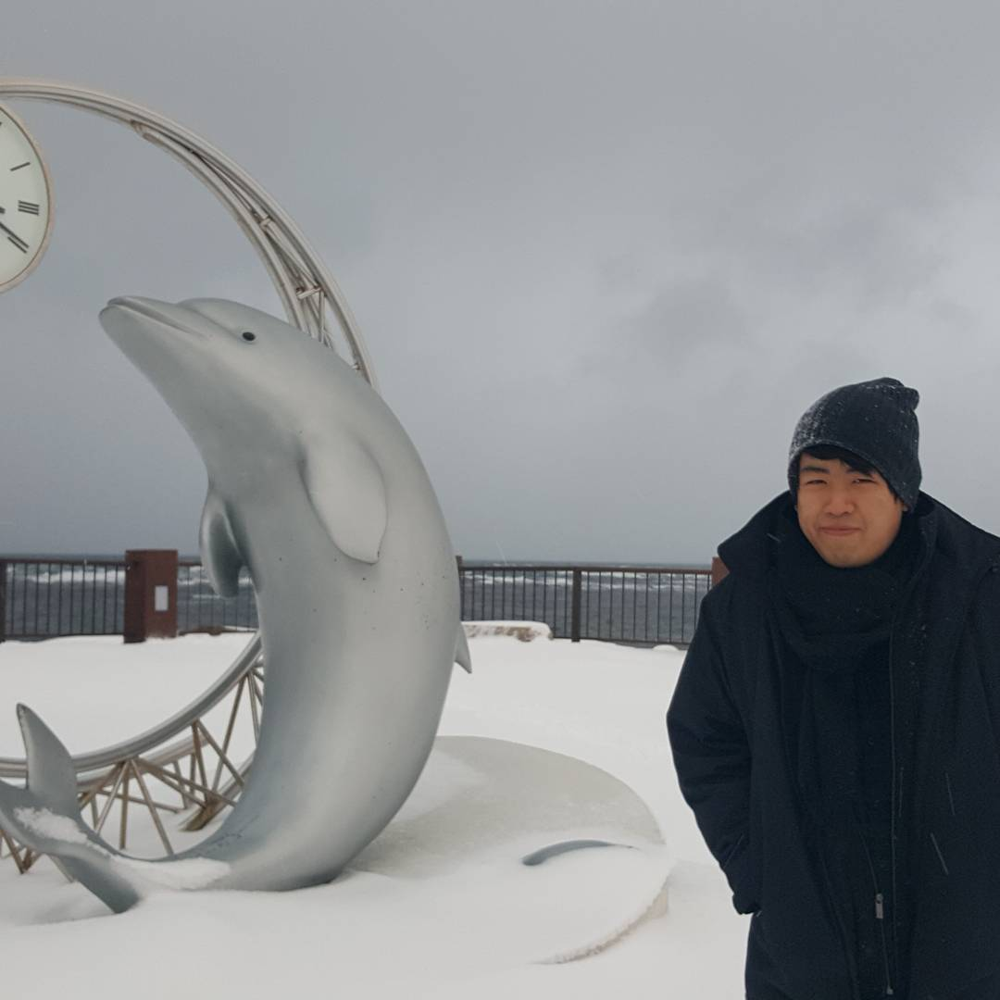

About Me
Career
I am a Designer with a background in software, research and data. I am interested in accessibility and breaking down institutional barriers through design. I believe that Design Thinking can be applied to everything in life, and engineers and designers should incorporate knowledge from both fields. I am interested in work that involves utilizing tools from multiple different spaces and the human side of the tech industry. I graduated from the University of California San Diego with a degree in Cognitive Science, specializing in Design & Interaction. Currently looking for work in Software Development and UX Design.
Most recently, I worked as a Software Engineering Intern in IBM Cloud Austin. I worked in the Softlayer team on the Internal Management System, a service for managing cloud deployment.
I am particularly proud of my work designing a Makerspace for local usage in Myanmar with Atutu, a San Diego based NGO, and designing the web app and product for AccountaBuddy, a proof-of-concept web app that gamifies accountability and positive habit formation.
I have a solid background in leadership and management, having previously been an Orientation Leader for UC San Diego's Sixth College, an admin of the UCSD Dota 2 Discord server, and the team captain of UCSD's Division 1 Dota 2 team.
Interests
I am a fan of stand-up comedy, having performed on occassion. I have opened for Ryan Hicks and Anish Shah. Some of my favorite comedians are: Gary Gulman, Hannibal Buress, Brian Simpson, John Mulaney, and Taylor Tomlinson
I love watching movies. Some of my favorite films are: Inglorious Basterds, The Farewell, Perfect Blue, Parasite, Welcome Back Mr MacDonald, The Silent Teacher, and The Prestige
I have played video games since I was a child. Some of my favorite games are: the Yakuza series, the Touhou series, VA11 HALL-A, games by From Software (in particular Sekiro: Shadows Die Twice and Bloodborne), and Nier: Automata. Currently diving into fighting games, and have played or attempted the following: Super Smash Brothers Ultimate, Super Smash Brothers Melee, Tekken 7, Street Fighter V, Guilty Gear, Under Night In Birth, and Granblue Fantasy Versus. I placed 9th in ArcRevo West for Granblue Fantasy Versus and also played Dota 2 semi-competitively, placing 5th in the 2015/2016 Collegiate Starleague, and winning Winter Gamefest 2019 and Triton Gaming Expo 2019.